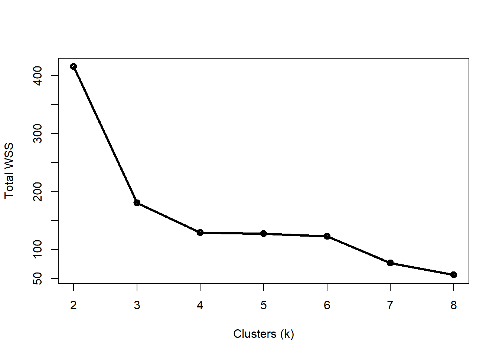

7.5 (Generalized) additive mixed models (AMM/GAMM)
The last category of mixed models that we will cover are generalized additive mixed models (GAMM). GAMM extend generalized additive models (GAM) by allowing for observations in different groups to have different intercepts or different smoothing functions. If that sounds complicated, that’s because it is.
- Additive models (AM) are a generalization of linear models, where a smoother of arbitrary shape is fit instead of a straight line. Smoothers can describe nonlinear patterns (very common in biology), but the process of fitting smoothers is sensitive to many assumptions and methodological details.
- Generalized additive models (GAM) generalize AM by relaxing the assumption of normal residuals and introducing a link function to additive models. This adds a layer of complexity to additive modeling77.
- Generalized additive mixed models (GAMM) generalize GAM by allowing different groups of observations to have different smoothers, or different coefficients on those smoothers. This adds even more complexity to the model.
Going from a linear model to a generalized linear model adds a layer of complication. Going from a fixed effects model to a mixed effects model adds more complication. And going from a linear model to an additive one compounds all of these complications. I’m not trying to warn you away from trying GAMM–just advising you to be prepared for frustration.
7.5.1 Example GAMM with real data
Pethybridge et al. (2018) compiled data on stable isotope concentrations in 3 species of tuna throughout the Atlantic, Pacific, and Indian Oceans. They used these concentrations to estimate the trophic position of each species. The data were made available in a separate publication (Bodin et al. 2021). Download this adapted version of the dataset and save it to your R home directory (or other favorite folder). Import the data and take a look.
in.name <- "bodin_data_2021-10-22.csv"
dat <- read.csv(in.name, header=TRUE)
# remove observations missing trophic position
dat <- dat[!is.na(dat$tp),]
# inspect dataset
head(dat)## species common date lat long ocean fork d15n
## 1 Thunnus alalunga Albacore tuna 2002-10-10 -16.64 -150.79 PO 91 15.17
## 2 Thunnus alalunga Albacore tuna 2004-16-09 -25.85 153.98 PO 87 9.55
## 3 Thunnus alalunga Albacore tuna 2004-16-09 -25.85 153.98 PO 99 9.48
## 4 Thunnus alalunga Albacore tuna 2004-20-09 -28.17 155.82 PO 78 10.46
## 5 Thunnus alalunga Albacore tuna 2004-23-09 -28.37 160.13 PO 76 12.23
## 6 Thunnus alalunga Albacore tuna 2004-23-09 -28.37 160.13 PO 80 10.35
## tp
## 1 7.32
## 2 4.98
## 3 4.95
## 4 5.36
## 5 6.10
## 6 5.31The dataset has the following variables:
| Variable | Units | Definition |
|---|---|---|
species |
N/A | Scientific name (binomen) of species. |
common |
N/A | Common name of species. |
date |
Days | Date of observation in YYYY-MM-DD format. |
lat |
\(^\circ\)N | Latitude of observation. Positive values indicate \(^\circ\)N; negative values indicate \(^\circ\)S. |
long |
\(^\circ\)E | Longitude of observation. Positive values indicate \(^\circ\)E; negative values indicate \(^\circ\)W. |
ocean |
N/A | Ocean where observation was taken. AO = Atlantic Ocean; IO = Indian Ocean; PO = Pacific Ocean. |
fork |
cm | Fork length (FL) of individual fish (distance from tip of snout to middle caudal fin rays). Slightly less than total length (TL). |
d15n |
Parts per thousand | Ratio of 15N to 14N in sample (aka: \(\delta\)15N or “delta fifteen N”) |
tp |
Tropic levels | Estimated trophic level of individual based on \(\delta\)15N in tissue samples. |
The researchers were interested in how the trophic level of tuna varied with body size and geography. The trophic level expresses how high in the food chain an animal is. Primary producers such as plants and phytoplankton have a trophic level of 1. Animals that consume primary producers have a trophic level of 2. For example, grasses have trophic level 1, zebras have trophic level 2, and lions have trophic level 3.
The variables in play are animal size (fork length), latitude, longitude, ocean, and species. Fork length, latitude, and longitude can be modeled as continuous predictors. Ocean and species are factors. Ocean has 3 levels (Atlantic, Indian, and Pacific), as does species (Thunnus albacares, T. obesus, and T. alalunga). Which of these factors should be treated as fixed? Which as random? It depends on the researchers’ goals. If the objective is to predict the trophic position of particular species, or to predict the trophic position of species within particular oceans, then those factors should be fixed. If the sets of oceans and species in the dataset are just taken as representing other, unexamined oceans and/or species, then these factors should be treated as random. We will follow the example of the original authors and treat ocean as a random factor, with species as fixed.
Now that we have decided on a mixed model approach, we need to decide whether to use linear models or additive models. A quick plot of the data, with species and ocean overlaid as shapes and colors, respectively, suggests that linear models are unlikely to describe the data very well. So, we can try an additive model.
# color by ocean
ocs <- sort(unique(dat$ocean))
cols <- rainbow(length(ocs), alpha=0.4)
dat$col <- cols[match(dat$ocean, ocs)]
# shape by species
spps <- sort(unique(dat$species))
pchs <- 15:17
dat$pch <- pchs[match(dat$species, spps)]
par(mfrow=c(1,3), cex.lab=1.4, cex.axis=1.4)
plot(dat$lat, dat$tp, col=dat$col, pch=dat$pch)
plot(dat$long, dat$tp, col=dat$col, pch=dat$pch)
plot(dat$fork, dat$tp, col=dat$col, pch=dat$pch)
Next, we need to consider what kind of additive model to use. The decision of whether to use an additive mixed model (AMM) or generalized additive mixed model (GAMM) hinges on the distribution of the response variable. Trophic positions cannot be negative (or <1), so we might think of the values as coming from a lognormal distribution. This would be a GAMM with Gaussian family and log link function.
The main R package for fitting GAMM is the same package for fitting GAM: mgcv (Wood 2017). It should be noted that there are several ways within mgcv to fit GAMM. We’ll use the function gamm(); function gam() can also be used by manipulating some of the arguments to the smoother functions s().
For this example we will fit 3 models, each with smoothers for a single continuous predictor. Each species will have its own smoother: this is what the by=spp argument in s() does. The random intercept of ocean is specified as a list.
library(mgcv)
# very important: make a factor version of species to be
# used by gamm()
dat$spp <- factor(dat$species)
# fit models
mod01 <- gamm(tp~s(lat, by=spp), data=dat,
random=list(ocean=~1), family=gaussian(link="log"))##
## Maximum number of PQL iterations: 20## iteration 1## iteration 2## iteration 3## iteration 4mod02 <- gamm(tp~s(long, by=spp), data=dat,
random=list(ocean=~1), family=gaussian(link="log"))##
## Maximum number of PQL iterations: 20## iteration 1## iteration 2## iteration 3## iteration 4## iteration 5mod03 <- gamm(tp~s(fork, by=spp), data=dat,
random=list(ocean=~1), family=gaussian(link="log"))##
## Maximum number of PQL iterations: 20## iteration 1## iteration 2## iteration 3## iteration 4Outputs from gamm() are very complicated and intimidating, even to experts. The most important part of the output is in the $gam component.
summary(mod01$gam, cor=FALSE)##
## Family: gaussian
## Link function: log
##
## Formula:
## tp ~ s(lat, by = spp)
##
## Parametric coefficients:
## Estimate Std. Error t value Pr(>|t|)
## (Intercept) 1.64874 0.01467 112.4 <2e-16 ***
## ---
## Signif. codes: 0 '***' 0.001 '**' 0.01 '*' 0.05 '.' 0.1 ' ' 1
##
## Approximate significance of smooth terms:
## edf Ref.df F p-value
## s(lat):sppThunnus alalunga 7.257 7.257 122.11 <2e-16 ***
## s(lat):sppThunnus albacares 8.743 8.743 27.61 <2e-16 ***
## s(lat):sppThunnus obesus 8.661 8.661 20.05 <2e-16 ***
## ---
## Signif. codes: 0 '***' 0.001 '**' 0.01 '*' 0.05 '.' 0.1 ' ' 1
##
## R-sq.(adj) = 0.365
## Scale est. = 0.68458 n = 3177The output contains only one parametric component, the estimated intercept. The overall or mean intercept was estimated as 1.648 \(\pm\) 0.015, and was statistically significant. The “approximate signicance” of smooth terms is presented in a table separate from the parametric components. The “approximate” part of the name is very important: take estimates of P-values, R2, and other such measures from GAMMs with a grain of salt. Even the help page for summary.gam() states that the P-value presented are likely to be too small.
If you have a factor with >2 levels, you can print an ANOVA for the level-specific smoothers:
anova(mod01$gam)##
## Family: gaussian
## Link function: log
##
## Formula:
## tp ~ s(lat, by = spp)
##
## Approximate significance of smooth terms:
## edf Ref.df F p-value
## s(lat):sppThunnus alalunga 7.257 7.257 122.11 <2e-16
## s(lat):sppThunnus albacares 8.743 8.743 27.61 <2e-16
## s(lat):sppThunnus obesus 8.661 8.661 20.05 <2e-16You can see the estimated smoothers using plot() on the $gam output.
par(mfrow=c(1,3)) # 1x3 panels, because 3 smoothers
plot(mod01$gam)
plot(mod02$gam)
plot(mod03$gam)
Some of the smoothers for the predictor variables have quite different shapes for each species! The original study authors fit a separate model for each species and continuous predictor combination. But, with this many observations (nrow(dat)), we might be able to fit a single model that includes all predictors.
# can we fit all the predictors in one model?
mod04 <- gamm(tp~s(lat, by=spp)+s(long, by=spp)+s(fork, by=spp),
data=dat,
random=list(ocean=~1),
family=gaussian(link="log"))##
## Maximum number of PQL iterations: 20## iteration 1## iteration 2## iteration 3## iteration 4# yes!
summary(mod04$gam)##
## Family: gaussian
## Link function: log
##
## Formula:
## tp ~ s(lat, by = spp) + s(long, by = spp) + s(fork, by = spp)
##
## Parametric coefficients:
## Estimate Std. Error t value Pr(>|t|)
## (Intercept) 1.8114 0.1406 12.88 <2e-16 ***
## ---
## Signif. codes: 0 '***' 0.001 '**' 0.01 '*' 0.05 '.' 0.1 ' ' 1
##
## Approximate significance of smooth terms:
## edf Ref.df F p-value
## s(lat):sppThunnus alalunga 6.581 6.581 66.471 < 2e-16 ***
## s(lat):sppThunnus albacares 8.518 8.518 20.780 < 2e-16 ***
## s(lat):sppThunnus obesus 8.848 8.848 32.363 < 2e-16 ***
## s(long):sppThunnus alalunga 8.100 8.100 40.762 < 2e-16 ***
## s(long):sppThunnus albacares 8.020 8.020 23.551 < 2e-16 ***
## s(long):sppThunnus obesus 8.010 8.010 52.744 < 2e-16 ***
## s(fork):sppThunnus alalunga 3.660 3.660 8.713 1.64e-05 ***
## s(fork):sppThunnus albacares 6.447 6.447 14.814 < 2e-16 ***
## s(fork):sppThunnus obesus 7.625 7.625 4.212 4.67e-05 ***
## ---
## Signif. codes: 0 '***' 0.001 '**' 0.01 '*' 0.05 '.' 0.1 ' ' 1
##
## R-sq.(adj) = -0.0545
## Scale est. = 0.48822 n = 3168Examine the smoothers:
# 3 predictors * 3 species = 9 panels
# note use of mfcol to fill by column,
# so species are rows and predictors are columns
par(mfcol=c(3,3))
plot(mod04$gam)
The plots produced by plotting a $gam output show the effect of each smoother, not the actual predicted y value. The predicted value for an observation is obtained by adding the intercept to the effect of each smoother (this is what the “additive” in “additive model” means). For your manuscript, you probably want to show model predictions on the original data scale. The method below should work for most situations.
In the past, we’ve predicted response variables with single continuous predictor variables. For this example, we have 3 continuous predictors. The usual strategy a situation with >1 continuous predictor is to present model predictions for each predictor with the other predictors held at their median. This makes the bookkeeping a little complicated, but the final graph is well worth the effort.
# number of x values for prediction
pn <- 50
# sequence of each x value acros its domain
px1 <- seq(min(dat$lat), max(dat$lat), length=pn)
px2 <- seq(min(dat$long), max(dat$long), length=pn)
px3 <- seq(min(dat$fork, na.rm=TRUE),
max(dat$fork, na.rm=TRUE), length=pn)
# data frame of all factors and an index for row number (z)
dx <- expand.grid(ocean=NA, spp=spps, z=1:pn)
dx <- dx[order(dx$ocean, dx$spp, dx$z),]
# add median of each predictor to dx
dx$lat <- median(dat$lat)
dx$long <- median(dat$long)
dx$fork <- median(dat$fork, na.rm=TRUE)
# need separate data frame of predictions for
# each predictor
dx1 <- dx
dx2 <- dx
dx3 <- dx
# in each prediction data frame, assign ONE of
# the predictors its sequence of values, leaving
# other predictors at their median.
## works because of recycling rule:
dx1$lat <- px1
dx2$long <- px2
dx3$fork <- px3
# calculate predictions
pred1 <- predict(mod04$gam, newdata=data.frame(dx1),
type="link", se.fit=TRUE)
pred2 <- predict(mod04$gam, newdata=data.frame(dx2),
type="link", se.fit=TRUE)
pred3 <- predict(mod04$gam, newdata=data.frame(dx3),
type="link", se.fit=TRUE)
# add predictions and SE to data frames
dx1$mu <- pred1$fit
dx2$mu <- pred2$fit
dx3$mu <- pred3$fit
dx1$se <- pred1$se.fit
dx2$se <- pred2$se.fit
dx3$se <- pred3$se.fit
# normal approximation for 95% CI
dx1$lo <- qlnorm(0.025, dx1$mu, dx1$se)
dx2$lo <- qlnorm(0.025, dx2$mu, dx2$se)
dx3$lo <- qlnorm(0.025, dx3$mu, dx3$se)
dx1$mn <- qlnorm(0.5, dx1$mu, dx1$se)
dx2$mn <- qlnorm(0.5, dx2$mu, dx2$se)
dx3$mn <- qlnorm(0.5, dx3$mu, dx3$se)
dx1$up <- qlnorm(0.975, dx1$mu, dx1$se)
dx2$up <- qlnorm(0.975, dx2$mu, dx2$se)
dx3$up <- qlnorm(0.975, dx3$mu, dx3$se)
# add variable "panel" to help organize the plot later
dx1$panel <- rep(1:3, each=pn)
dx2$panel <- rep(4:6, each=pn)
dx3$panel <- rep(7:9, each=pn)
dz <- rbind(dx1, dx2, dx3)
dz <- dz[order(dz$panel),]Next we make the plot.
# helps with bookkeeping
pan.df <- data.frame(panel=1:9,
con=rep(c("lat", "long", "fork"), each=3),
spp=rep(spps, times=3))
par(mfrow=c(3,3), mar=c(5.1, 5.1, 1.1, 1.1),
bty="n", las=1)
for(i in 1:9){
flag <- which(dz$panel == i)
zi <- dz[flag,]
xvar <- pan.df$con[i]
x <- zi[,xvar]
sppi <- pan.df$spp[i]
di <- dat[which(dat$species == sppi),]
if(xvar == "lat"){
use.xlab <- expression(Latitude~(degree*N))
}
if(xvar == "long"){
use.xlab <- expression(Longitude~(degree*E))
}
if(xvar == "fork"){
use.xlab <- "Fork length (cm)"
}
plot(di[,xvar], di$tp, pch=16, col="#00000020",
ylim=c(0,16), xlab=use.xlab,
ylab="Trophic level (unitless)")
points(x, zi$mn, type="l", lwd=3, col="red")
points(x, zi$lo, type="l", lwd=3, lty=2, col="red")
points(x, zi$up, type="l", lwd=3, lty=2, col="red")
title(main=pan.df$spp[i], adj=0, font.main=3)
} 
The fitted smoothers are pretty good for some species and predictors, but not so much for others. Refinement of the analysis should involve revisiting what distribution to use and what random effects structure to include in the model. Fiddling with the options for fitting smoothers (see ?s) might help as well.